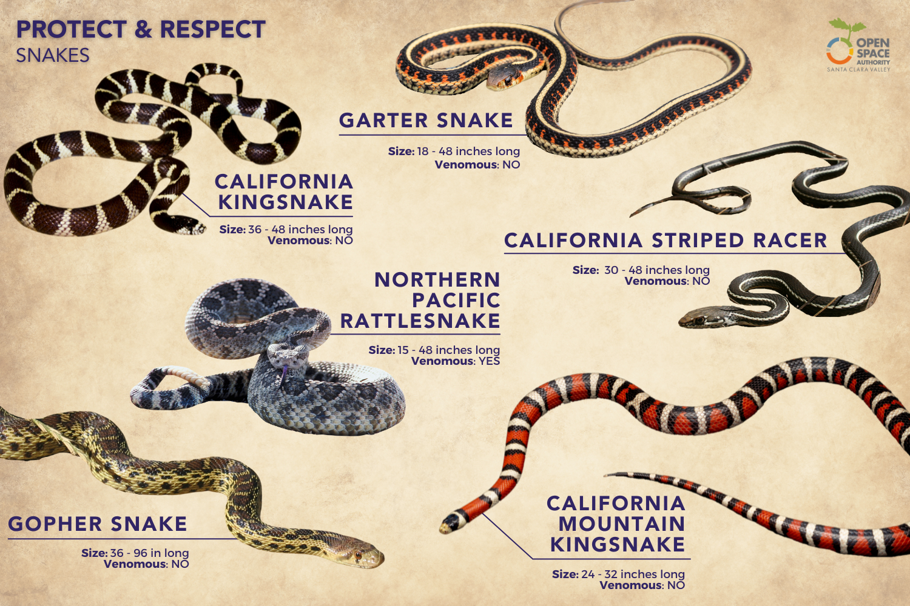

Snakes

Snakes are elongated, legless reptiles belonging to the order Squamata and suborder Serpentes. They are characterized by their flexible bodies, lack of eyelids and external ears, and unique mode of locomotion through lateral undulation or sidewinding. Snakes are found in a wide range of habitats worldwide, from forests and grasslands to deserts and aquatic environments. Here's a comprehensive overview of these fascinating and often misunderstood creatures:
Description
- Physical Characteristics: Snakes exhibit a wide variety of sizes, colors, and patterns, ranging from tiny threadsnakes less than 10 centimeters (4 inches) long to massive pythons and anacondas that can exceed 6 meters (20 feet) in length. They have long, cylindrical bodies covered in scales, forked tongues for sensing chemical cues, and specialized jaws capable of swallowing prey whole.
- Skeleton and Musculature: Snakes have a highly modified skeletal structure adapted for elongation and flexibility, with numerous vertebrae and ribs that allow them to move with remarkable agility and maneuverability. They lack limbs but possess powerful muscles that enable them to coil, constrict, and strike with precision.
- Ecological Roles: Snakes play crucial roles in ecosystems as both predators and prey. They help regulate populations of prey species such as rodents, insects, and amphibians and serve as prey for larger predators such as birds of prey, mammals, and other snakes. Some species also provide valuable ecosystem services such as seed dispersal and soil aeration.
Behavior
- Feeding Behavior: Snakes are carnivorous predators that feed primarily on vertebrates such as rodents, birds, fish, and amphibians. They use a variety of hunting strategies, including ambush predation, pursuit predation, and venomous or constriction-based prey immobilization.
- Reproductive Behavior: Snakes exhibit diverse reproductive strategies, including oviparous (egg-laying) and viviparous (live-bearing) modes of reproduction. Mating rituals may involve courtship displays, combat between males, or chemical cues released by females to attract mates.
- Habitat Use: Snakes occupy a wide range of habitats, including terrestrial, arboreal, fossorial (burrowing), and aquatic environments. Different species have adapted to specific ecological niches and may exhibit specialized behaviors and physiological adaptations to survive in their respective habitats.
Conservation Status
- Threats: Snakes face numerous threats to their survival, including habitat loss and fragmentation, persecution by humans due to fear or misunderstanding, road mortality, pollution, climate change, and unsustainable collection for the pet trade or traditional medicine.
- Declining Populations: Many snake populations are declining due to habitat destruction, overexploitation, and other anthropogenic activities. Fragmentation of natural habitats isolates snake populations, reduces genetic diversity, and increases their vulnerability to extinction.
- Conservation Efforts: Conservation efforts for snakes focus on habitat conservation, species protection, public education and outreach, and sustainable management of natural resources. Establishing protected areas, implementing habitat restoration projects, and enforcing regulations to prevent illegal trade and persecution are essential for conserving snake biodiversity.
Fun Facts
- Venomous vs. Non-venomous: While some snakes possess venom and use it to immobilize or kill prey, the majority of snake species are non-venomous and rely on other methods such as constriction or ambush predation to capture food.
- Ecdysis: Snakes shed their skin periodically through a process called ecdysis, which allows them to grow and remove parasites and old skin cells. Before shedding, snakes may become dull or opaque in coloration and exhibit increased activity as they prepare to slough off their old skin.
- Hybridization: Some snake species are known to hybridize with closely related species, resulting in hybrid offspring with unique characteristics. Hybridization can occur naturally in the wild or be induced in captivity for research or breeding purposes.
Conservation and Management
- Habitat Protection: Protecting and preserving natural habitats such as forests, wetlands, grasslands, and coastal areas is essential for maintaining healthy snake populations and preserving biodiversity. Establishing protected areas, habitat corridors, and wildlife reserves can provide safe havens for snakes and other wildlife.
- Species Recovery: Implementing species-specific conservation measures such as captive breeding and reintroduction programs, habitat restoration, and population monitoring can help recover populations of threatened or endangered snake species and prevent their extinction.
- Public Education: Educating the public about the ecological importance of snakes, dispelling myths and misconceptions, and promoting coexistence and tolerance towards these animals are crucial for fostering positive attitudes and behaviors towards snake conservation. Public outreach programs, interpretive signage, and media campaigns can raise awareness and promote appreciation for snakes and their habitats.
Conclusion
Snakes are fascinating and ecologically important creatures that play vital roles in maintaining the balance of ecosystems worldwide. By recognizing the value of snakes as integral components of biodiversity, understanding their ecological roles and conservation needs, and taking proactive measures to protect and conserve snake populations and their habitats, we can ensure their continued survival and contribute to the preservation of global biodiversity.